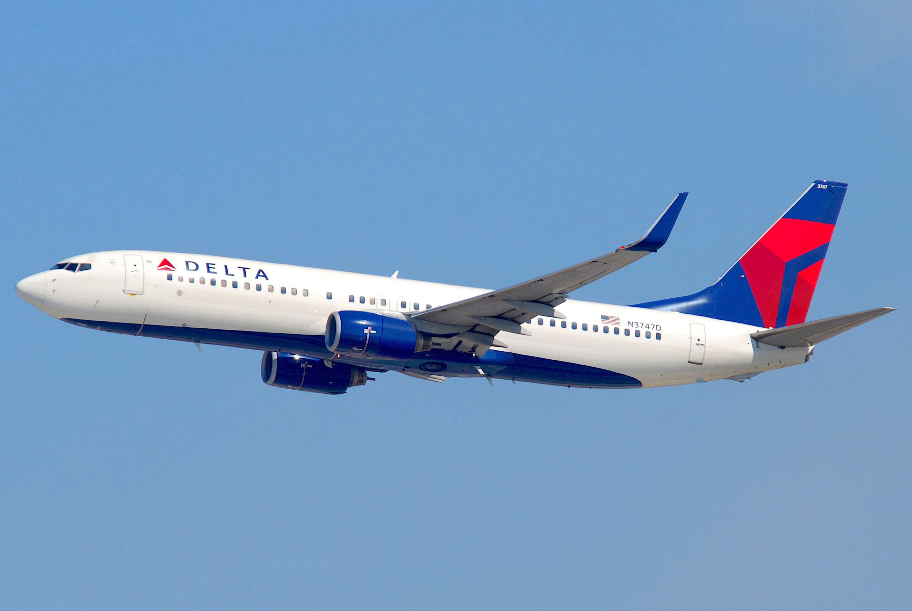
Narrow-body · Short to medium haul
Boeing 737
Developed to supplement the 727 on shorter routes, the twinjet keeps the familiar six-abreast cabin of the 707 in a compact, efficient design.
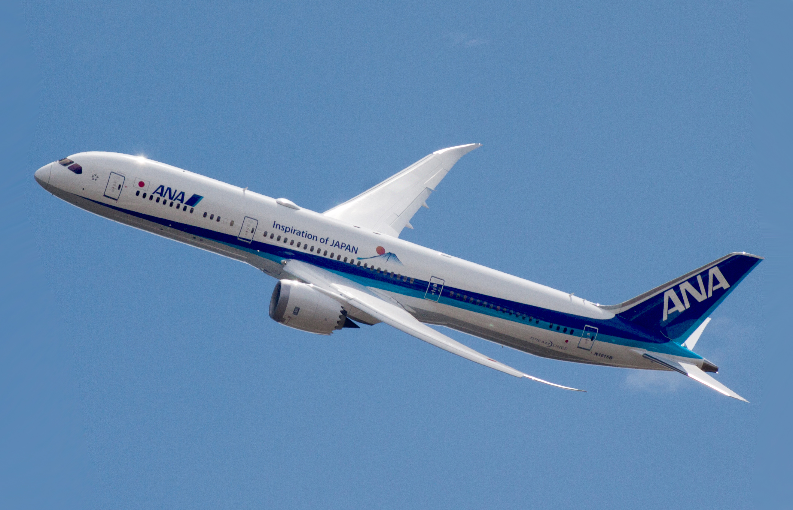
A guide to the aircraft we fly
From short-haul workhorses to long-range icons, get to know the passenger aircraft that bring the world a little closer.
Explore the aircraftFrom the dependable 737 to the long-haul Dreamliner, Boeing’s aircraft have shaped modern commercial aviation for generations.

Developed to supplement the 727 on shorter routes, the twinjet keeps the familiar six-abreast cabin of the 707 in a compact, efficient design.
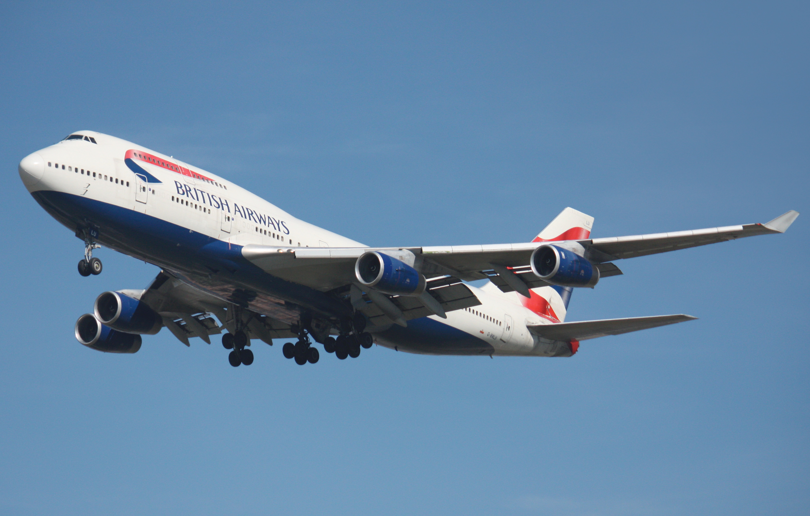
Designed at a scale that changed air travel, the 747 became one of the world’s most recognisable long-range passenger aircraft.
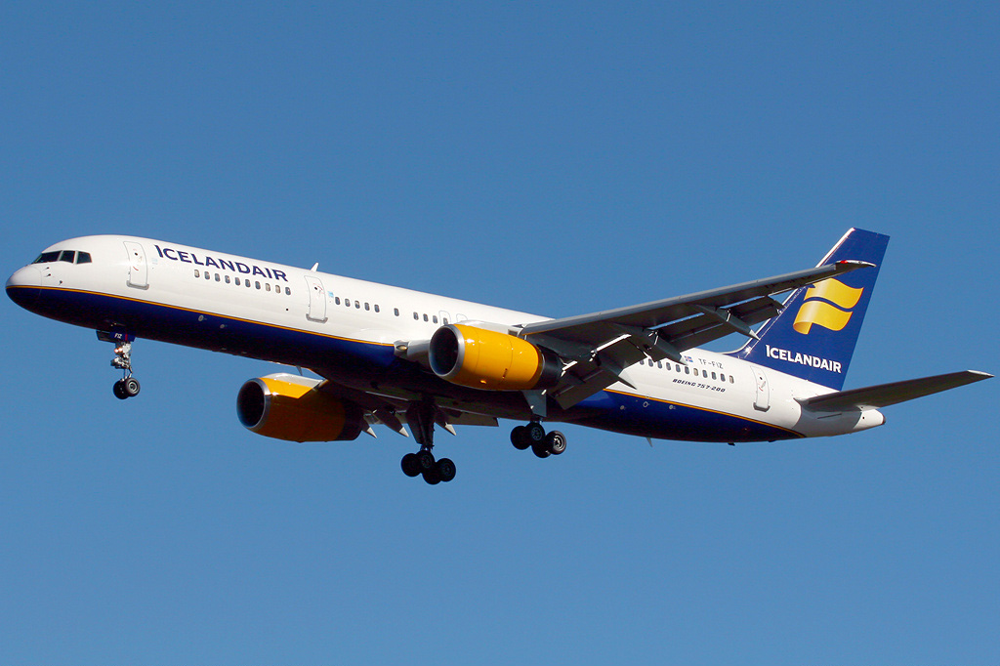
A powerful successor to the 727, the 757 pairs narrow-body efficiency with the range to handle demanding routes.
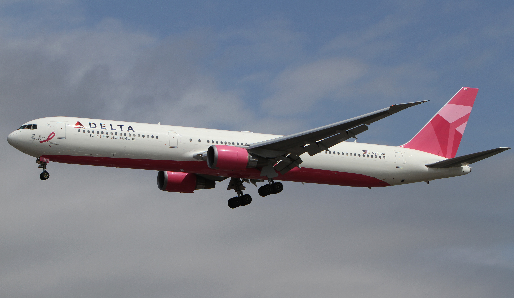
Launched in 1978, the twin-engine wide-body helped make transatlantic service more accessible to airlines.
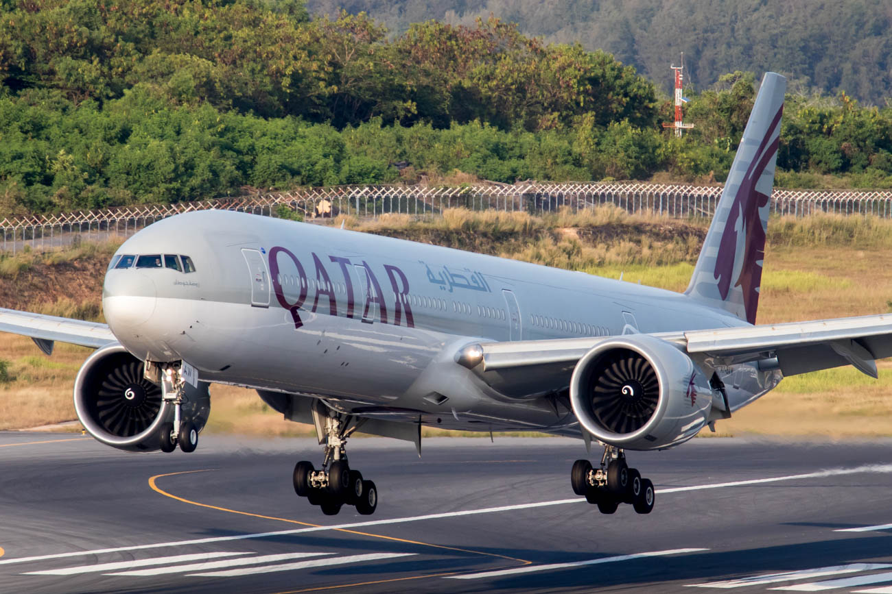
Known as the Triple Seven, this long-range wide-body is the world’s largest twinjet.
Built around efficiency, the Dreamliner brought advanced materials and a new generation of long-distance flying to the market.
Designed to connect regional routes, Embraer’s jets bring mainline comfort and flexibility to smaller markets.

The four-abreast E-Jet family covers short- and medium-range routes, with the original series entering service in 2004.

Launched as a turbofan-powered stretch of the Brasilia turboprop, the ERJ family first flew in 1995.
Airbus aircraft span nimble single-aisle jets and some of the most capable long-haul airliners in the sky.
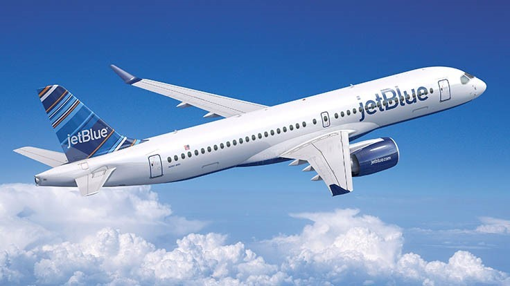
Originally developed by Bombardier as the CSeries, the A220 is a five-abreast aircraft designed for smaller-capacity routes.
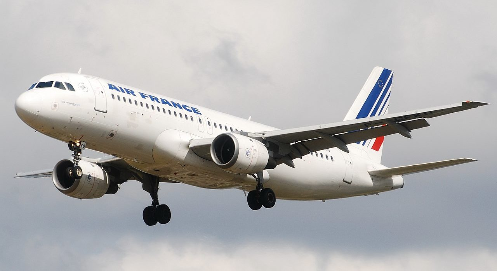
One versatile family, four sizes: the A318, A319, A320 and A321 serve routes around the globe.
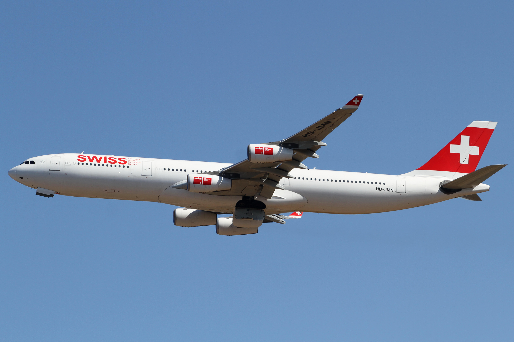
Developed in parallel, the A330 twinjet and four-engine A340 opened a new chapter in Airbus long-range travel.
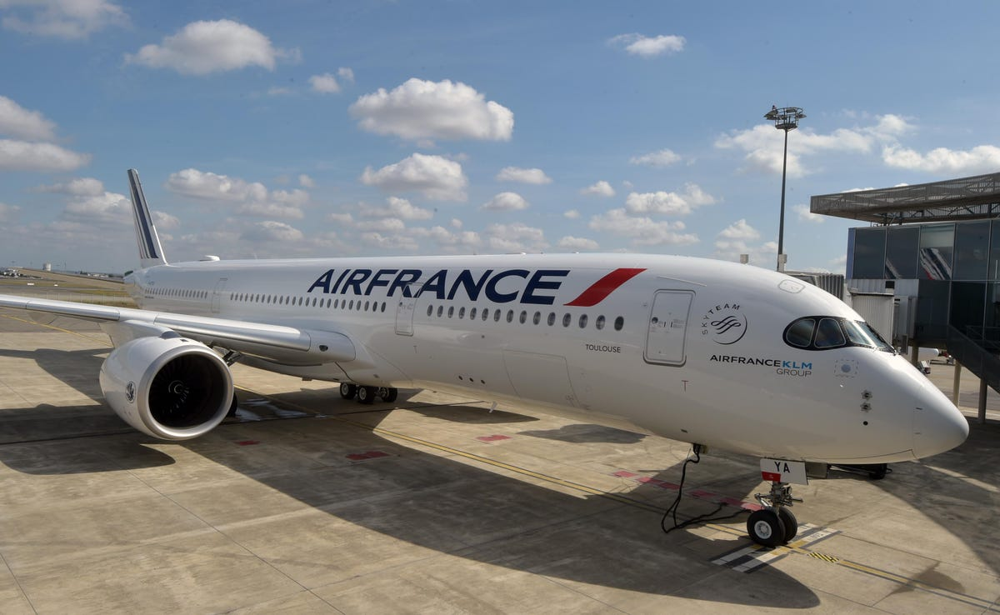
A clean-sheet, twin-engine design built for long-haul service, developed in response to a new generation of efficient aircraft.
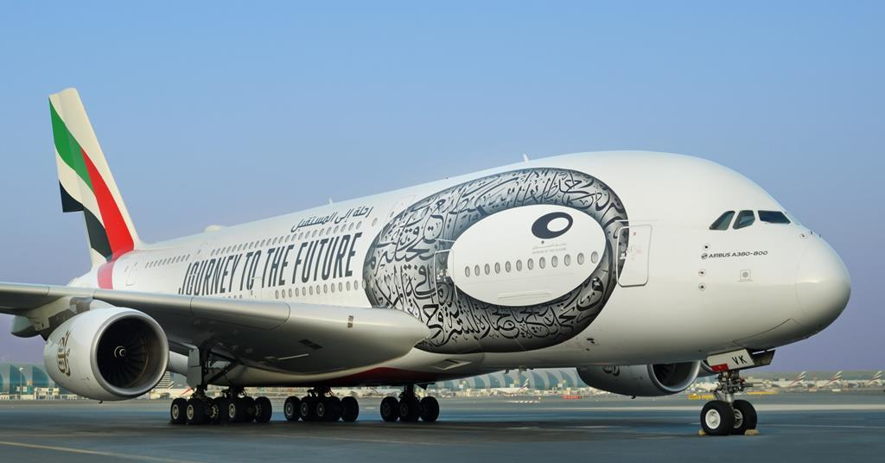
The world’s largest passenger airliner is also the only full-length, double-deck jet ever to enter commercial service.